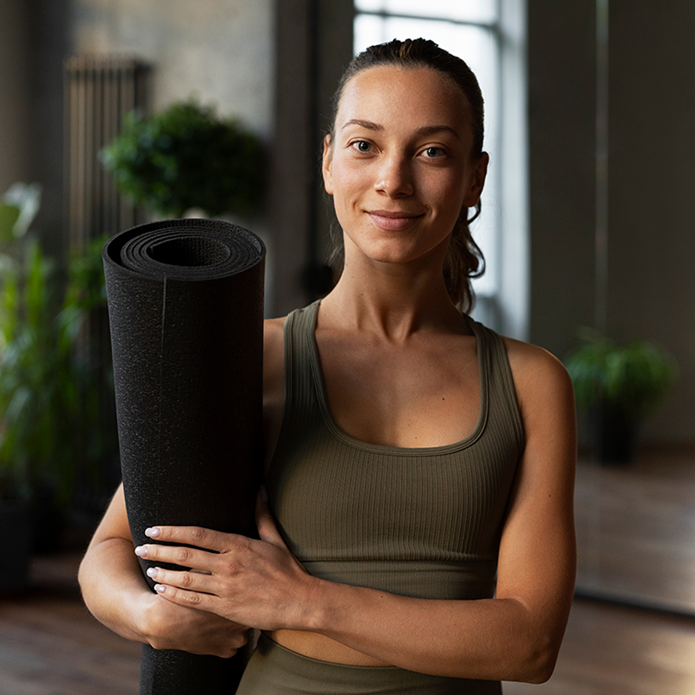

Maya Chen, Lead Instructor
Maya teaches Gentle Yoga and Beginner Foundations with an emphasis on clear explanations, comfortable pacing, and practical options for different bodies.

Maya teaches Gentle Yoga and Beginner Foundations with an emphasis on clear explanations, comfortable pacing, and practical options for different bodies.
Jordan leads breath-focused flow classes that help students build strength and coordination without losing sight of safe, mindful movement.
Elena specializes in quiet, supported practices designed to help students manage stress and make space for recovery.
Riverbend welcomes students with different mobility, sensory, and communication needs. The studio provides step-free entry, an accessible restroom, chair-based pose options, and space for mobility devices. Students may contact the studio before class to discuss other reasonable accommodations or communication preferences.